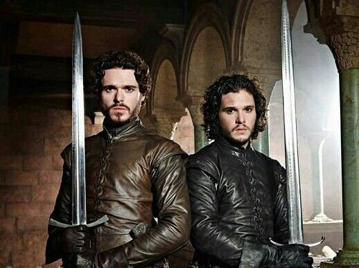

My Game Of Thrones Favorite Characters?
My Favorite Game of Thrones characters are Jon snow and Rob Stark
These two are my favorite characters in this show because they are very loyal to their family and they are willing to fight for the right cause in this story i will insert an image below of what they look like and they are also brothers in the show.
